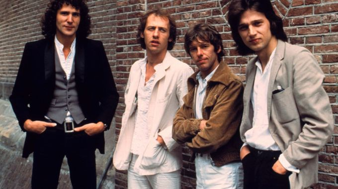

Biografía de Dire Straits
Todo comenzó en Londres, donde tres amigos compartían piso. Se trataba de los hermanos Mark y David Knopfler, junto a John Illsley. Mark Knopfler trabajaba como maestro de escuela, David era asistente social y John trabajaba en una tienda de discos. Su situación económica no les permitía demasiadas alegrías. A ellos se solía unir su amigo Pick Whiters, quien era el único que estaba introducido en el mundo de la música. Poseía experiencia como músico, tras haber participado en algunos grupos.
En 1977 Pick y Mark deciden crear un grupo. Pick sugiere el nombre: 'Dire Straits', algo así como 'situación límite'. Juntos, los cuatro componentes del grupo consiguen reunir el dinero para grabar una maqueta. En ella, cuatro temas: 'Wild West End', 'Water Of Love', 'Sacred Loving' y 'Sultans Of Swing'.
Cuando un conocido disc-jockey de una emisora de radio en Londres pinchó la maqueta en su emisora, la reacción de la audiencia fue muy favorable, lo que oblogó al pinchadiscos a seguir emitiendo la música de los Knopfler y compañía. Entre los oyentes de la emisora se encontraba un conocido mánager de Fonogram, a la búsqueda de nuevos talentos, quien no cesa hasta que consigue que dos Dire firmen un contrato con su compañía. El mismo representante de Fonogram les presenta a una representante para sus conciertos.
Los Dire Straits actúan como teloneros del grupo norteamericano 'Talking Heads' , en su gira por Gran Bretaña, lo que les permite coger experiencia y darse a conocer. Entre todas las notas del grupo destacan las de la guitarra de Mark Knopfler, quien nos obsequia con sonidos extraordinarios entre el blues y el rock.
En marzo de 1978 Dire Straits publican su primer álbum, 'Dire Straits', grabado entre el 14 de Febrero y el 8 de Marzo de ese mismo año. Poco después comienzan a hacer conciertos en solitario, incluso fuera del Reino Unido. Por desgracia, las ventas del disco no son demasiado elevadas.
Un año después graban 'Communiqué', su segundo álbum y el menos vendido del grupo. Para compensar, sacan 'Making Movies', una vuelta al rock clásico, con temas más fuertes.